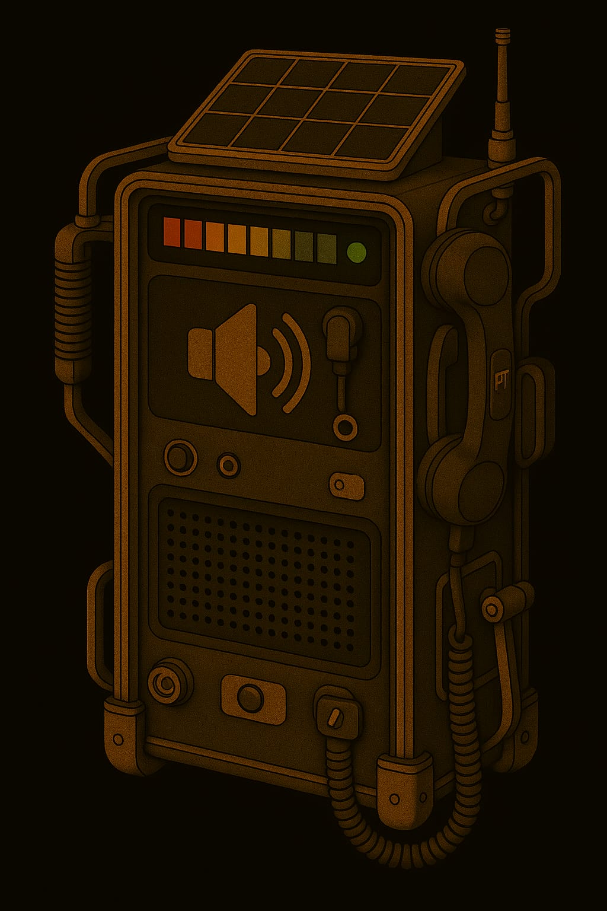
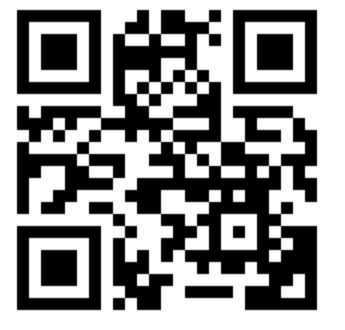
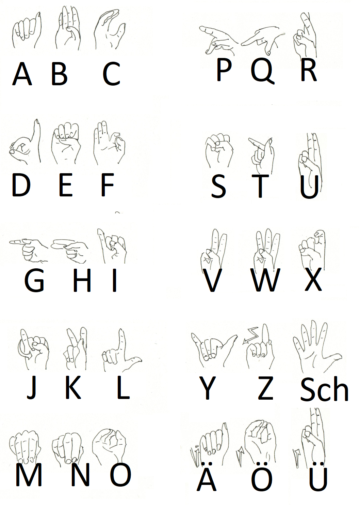

Kommunikation
1. Gesprochene Sprache
Innerhalb von Gebäuden mit atembarer Atmosphäre braucht man keinen Helm oder Anzug. Hier kann man ganz normal sprechen.
Ausser-Marser chaben gernä ainen AAkzent!
- Titanen: russischer Akzent, die Betonungen sind verschoben
- jedes "ch" => "kch"
- a => aaa
- ch => chch
- h => ch
- gezogene Vokale an den falschen Stellen
- falsches grammatisches Geschlecht
- Merkspruch: ich wiinscht ichch chätte ein Pferdeekutsch
- Lunare: französischer Akzent
- jedes "ch" => "sch"
- keine "h"
- a => o
- falsches grammatisches Geschlecht
- Merkspruch: isch säe einö 'übschen Kühlschronk
2. Funkprotokolle, gesprochen
Einleitung
Kommunikation zwischen zwei und mehr Teilnehmern auf ein- und demselben Kanal setzt Disziplin voraus. Damit das klappt, gibt es das Funkprotokoll.
Generell gilt:
- erste denken, dann sprechen
- wer das Gespräch startet, der endet es auch

Hier Beispiele:
Beispiele
Einfach
- Gruppe I von Basis – Kommen
- hier gruppe 1 – kommen
- hier basis - befehl: Suchaktion einstellen – kommen
- hier gruppe 1 - verstanden kommen
- hier basis - ende
Eingespielter Funkverkehr
- Gruppe 1 von Basis, bla bla bla kommen
- hier gruppe x verstanden, ende
Achtung Spruch
- gruppe x von basis achtung spruch kommen
- hier gruppe x achtung sprung kommen
- hier basis ort datum uhrzeit frage / Nachricht wiederholen / kommen
- hier gruppe x ort datum, uhrzeit [wiederholung der nachricht] kommen
- hier basis verstanden

Reihenruf
- gruppe x,y,z von basis laber rhabarber kommen
- hier gruppe x verstanden kommen
- hier gruppe y verstanden kommen
- hier gruppe z verstanden kommen
- hier basis ende
Sammelruf
- alle von basis laber rhabarber kommen
- hier gruppe x verstanden kommen
- hier gruppe y verstanden kommen
- hier gruppe z verstanden kommen
- hier basis ende
3. Gebärdensprache
Mit Helm draussen und ohne Mikrophon oder sonstiogen Funkverkehr kann man draussen sich nicht unterhalten. Der Helm hält den Schall so gut ab; allenfalls kann man sich schreiend unterhalten. Und das ist auf Dauer zu anstrengend.
Draussen unterhalten sich alle in Gebärdensprache. Das heisst:
- Für jedes Wort bzw. für jeden Begriff gibt es ein Zeichen
- Das Verb ist immer hinten, also ICH PFERD SEHEN
- Mund und Mimik sind daran beteiligt
Umsetzung am Rollenspiel-Tisch
- Du kannst DGS (Deutsche Gebärdensprache) => suuper! Verwende die!
- Du kannst keine DGS => unterhaltet euch einfach normal am Rollenspiel-Tisch; denkt aber daran: ihr könnt euch nur auf Sichtweite unterhalten; man kann niemandem hinterherrufen oder von hinten ansprechen :-D
Info: Grossschreibung? Ein Gebärdenbegriff wird durch Grossschreibung markiert.
| spreadthesign | signdict | manimundo |
|---|---|---|
 |
 |  |
| Lexikon | Lexikon | Lernen |
Finger-Alphabet
Neue Begriffe werden mit dem Fingeralphabet aufgegriffen. Und das findest du hier:
